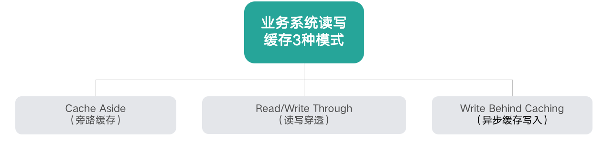
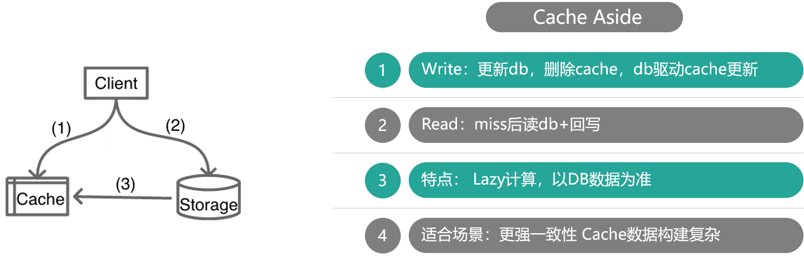
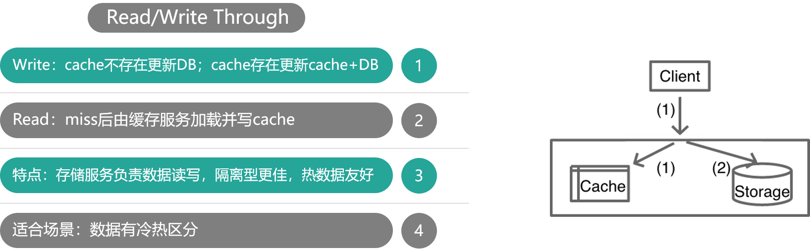

- 00 开篇寄语：缓存，你真的用对了吗？.md.html
- 01 业务数据访问性能太低怎么办？.md.html
- 02 如何根据业务来选择缓存模式和组件？.md.html
- 03 设计缓存架构时需要考量哪些因素？.md.html
- 04 缓存失效、穿透和雪崩问题怎么处理？.md.html
- 05 缓存数据不一致和并发竞争怎么处理？.md.html
- 06 Hot Key和Big Key引发的问题怎么应对？.md.html
- 07 MC为何是应用最广泛的缓存组件？.md.html
- 08 MC系统架构是如何布局的？.md.html
- 09 MC是如何使用多线程和状态机来处理请求命令的？.md.html
- 10 MC是怎么定位key的.md.html
- 11 MC如何淘汰冷key和失效key.md.html
- 12 为何MC能长期维持高性能读写？.md.html
- 13 如何完整学习MC协议及优化client访问？.md.html
- 14 大数据时代，MC如何应对新的常见问题？.md.html
- 15 如何深入理解、应用及扩展 Twemproxy？.md.html
- 16 常用的缓存组件Redis是如何运行的？.md.html
- 17 如何理解、选择并使用Redis的核心数据类型？.md.html
- 18 Redis协议的请求和响应有哪些“套路”可循？.md.html
- 19 Redis系统架构中各个处理模块是干什么的？.md.html
- 20 Redis如何处理文件事件和时间事件？.md.html
- 21 Redis读取请求数据后，如何进行协议解析和处理.md.html
- 22 怎么认识和应用Redis内部数据结构？.md.html
- 23 Redis是如何淘汰key的？.md.html
- 24 Redis崩溃后，如何进行数据恢复的？.md.html
- 25 Redis是如何处理容易超时的系统调用的？.md.html
- 26 如何大幅成倍提升Redis处理性能？.md.html
- 27 Redis是如何进行主从复制的？.md.html
- 28 如何构建一个高性能、易扩展的Redis集群？.md.html
- 29 从容应对亿级QPS访问，Redis还缺少什么？.md.html
- 30 面对海量数据，为什么无法设计出完美的分布式缓存体系？.md.html
- 31 如何设计足够可靠的分布式缓存体系，以满足大中型移动互联网系统的需要？.md.html
- 32 一个典型的分布式缓存系统是什么样的？.md.html
- 33 如何为秒杀系统设计缓存体系？.md.html
- 34 如何为海量计数场景设计缓存体系？.md.html
- 35 如何为社交feed场景设计缓存体系？.md.html
02 如何根据业务来选择缓存模式和组件？
你好，我是你的缓存老师陈波，欢迎进入第 2 课时“缓存的读写模式及分类”。这一课时我们主要学习缓存的读写模式以及缓存的分类。
缓存读写模式
如下图，业务系统读写缓存有 3 种模式：
- Cache Aside（旁路缓存）
- Read/Write Through（读写穿透）
- Write Behind Caching（异步缓存写入）

Cache Aside

如上图所示，Cache Aside 模式中，业务应用方对于写，是更新 DB 后，直接将 key 从 cache 中删除，然后由 DB 驱动缓存数据的更新；而对于读，是先读 cache，如果 cache 没有，则读 DB，同时将从 DB 中读取的数据回写到 cache。
这种模式的特点是，业务端处理所有数据访问细节，同时利用 Lazy 计算的思想，更新 DB 后，直接删除 cache 并通过 DB 更新，确保数据以 DB 结果为准，则可以大幅降低 cache 和 DB 中数据不一致的概率。
如果没有专门的存储服务，同时是对数据一致性要求比较高的业务，或者是缓存数据更新比较复杂的业务，这些情况都比较适合使用 Cache Aside 模式。如微博发展初期，不少业务采用这种模式，这些缓存数据需要通过多个原始数据进行计算后设置。在部分数据变更后，直接删除缓存。同时，使用一个 Trigger 组件，实时读取 DB 的变更日志，然后重新计算并更新缓存。如果读缓存的时候，Trigger 还没写入 cache，则由调用方自行到 DB 加载计算并写入 cache。
Read/Write Through

如上图，对于 Cache Aside 模式，业务应用需要同时维护 cache 和 DB 两个数据存储方，过于繁琐，于是就有了 Read/Write Through 模式。在这种模式下，业务应用只关注一个存储服务即可，业务方的读写 cache 和 DB 的操作，都由存储服务代理。存储服务收到业务应用的写请求时，会首先查 cache，如果数据在 cache 中不存在，则只更新 DB，如果数据在 cache 中存在，则先更新 cache，然后更新 DB。而存储服务收到读请求时，如果命中 cache 直接返回，否则先从 DB 加载，回种到 cache 后返回响应。
这种模式的特点是，存储服务封装了所有的数据处理细节，业务应用端代码只用关注业务逻辑本身，系统的隔离性更佳。另外，进行写操作时，如果 cache 中没有数据则不更新，有缓存数据才更新，内存效率更高。
微博 Feed 的 Outbox Vector（即用户最新微博列表）就采用这种模式。一些粉丝较少且不活跃的用户发表微博后，Vector 服务会首先查询 Vector Cache，如果 cache 中没有该用户的 Outbox 记录，则不写该用户的 cache 数据，直接更新 DB 后就返回，只有 cache 中存在才会通过 CAS 指令进行更新。
Write Behind Caching

Write Behind Caching 模式与 Read/Write Through 模式类似，也由数据存储服务来管理 cache 和 DB 的读写。不同点是，数据更新时，Read/write Through 是同步更新 cache 和 DB，而 Write Behind Caching 则是只更新缓存，不直接更新 DB，而是改为异步批量的方式来更新 DB。该模式的特点是，数据存储的写性能最高，非常适合一些变更特别频繁的业务，特别是可以合并写请求的业务，比如对一些计数业务，一条 Feed 被点赞 1万 次，如果更新 1万 次 DB 代价很大，而合并成一次请求直接加 1万，则是一个非常轻量的操作。但这种模型有个显著的缺点，即数据的一致性变差，甚至在一些极端场景下可能会丢失数据。比如系统 Crash、机器宕机时，如果有数据还没保存到 DB，则会存在丢失的风险。所以这种读写模式适合变更频率特别高，但对一致性要求不太高的业务，这样写操作可以异步批量写入 DB，减小 DB 压力。
讲到这里，缓存的三种读写模式讲完了，你可以看到三种模式各有优劣，不存在最佳模式。实际上，我们也不可能设计出一个最佳的完美模式出来，如同前面讲到的空间换时间、访问延迟换低成本一样，高性能和强一致性从来都是有冲突的，系统设计从来就是取舍，随处需要 trade-off。这个思想会贯穿整个 cache 课程，这也许是我们学习这个课程的另外一个收获，即如何根据业务场景，更好的做 trade-off，从而设计出更好的服务系统。
缓存分类及常用缓存介绍
前面介绍了缓存的基本思想、优势、代价以及读写模式，接下来一起看下互联网企业常用的缓存有哪些分类。
按宿主层次分类
按宿主层次分类的话，缓存一般可以分为本地 Cache、进程间 Cache 和远程 Cache。
- 本地 Cache 是指业务进程内的缓存，这类缓存由于在业务系统进程内，所以读写性能超高且无任何网络开销，但不足是会随着业务系统重启而丢失。
- 进程间 Cache 是本机独立运行的缓存，这类缓存读写性能较高，不会随着业务系统重启丢数据，并且可以大幅减少网络开销，但不足是业务系统和缓存都在相同宿主机，运维复杂，且存在资源竞争。
- 远程 Cache 是指跨机器部署的缓存，这类缓存因为独立设备部署，容量大且易扩展，在互联网企业使用最广泛。不过远程缓存需要跨机访问，在高读写压力下，带宽容易成为瓶颈。
本地 Cache 的缓存组件有 Ehcache、Guava Cache 等，开发者自己也可以用 Map、Set 等轻松构建一个自己专用的本地 Cache。进程间 Cache 和远程 Cache 的缓存组件相同，只是部署位置的差异罢了，这类缓存组件有 Memcached、Redis、Pika 等。
按存储介质分类
还有一种常见的分类方式是按存储介质来分，这样可以分为内存型缓存和持久化型缓存。
- 内存型缓存将数据存储在内存，读写性能很高，但缓存系统重启或 Crash 后，内存数据会丢失。
- 持久化型缓存将数据存储到 SSD/Fusion-IO 硬盘中，相同成本下，这种缓存的容量会比内存型缓存大 1 个数量级以上，而且数据会持久化落地，重启不丢失，但读写性能相对低 1～2 个数量级。Memcached 是典型的内存型缓存，而 Pika 以及其他基于 RocksDB 开发的缓存组件等则属于持久化型缓存。